<<初心>>
なんとなく、他シャードにも田中を作った。
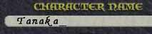
買い物に行く。
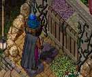
フルスペ本探すけど無い。
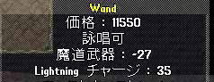
ワンド高けー。
ぶり前に行く。
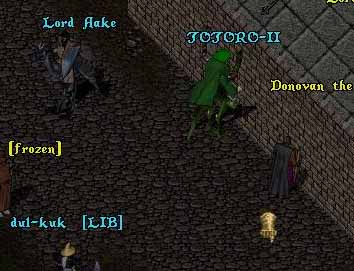
トトロさんのプロフを見る。
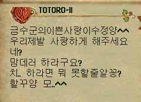
＾＾ しか理解できない。
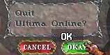
なんか、日韓交友とか良くなってる中、日本人名で鉱山PKとかシャレにならないと
思う人いそうなんで、やめとこ。
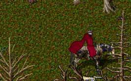
日常。
なんか新しいパッチが当たった。
Ctr + Shift を押す。
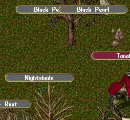
素晴らしい。
今まで、どうしても見つけにくい、BPとMRが拾いやすくなった。
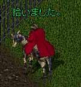
拾いまくる。
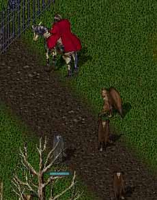
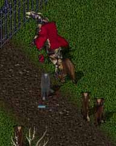
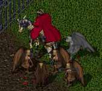
盾上げしてないって。
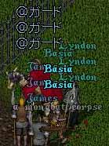
殺すのに秘薬もったいないのでガード呼ぶ。
鉱山PKだってガードを呼べば来てくれる。
ガードのプライドも安くなったね。
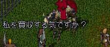
そうでもなかった。
お散歩。
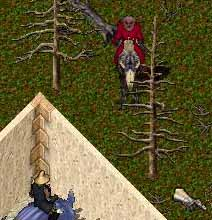
すごい見られてたので
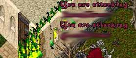
攻撃したらログアウトされた。
対人キャラとかに変えられたりしたら、嫌なので逃亡。
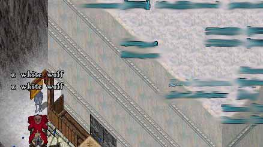
こんな家の前は一瞬たりとも立ち止まらない。
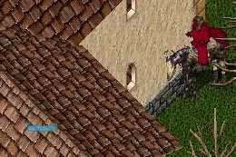
立ち止まる。
PD見たら、裸だったのでしつこく家の前をぐるぐる回った。
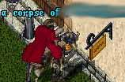
出てきた。
ていまーさんだったらしく、WW召還してオールキル言ってから亡くなったので
死体の中身も見れずに鬼逃げ。
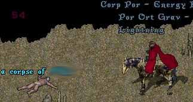
もちろん本職も忘れません。
この方、目の前にリコールしてきて、そのまま掘ってました。
幽霊姿出さないので、場所変え。
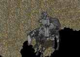
他の場所でハイド待ちしてると
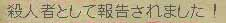
殺してから2分後くらいに報告が来た。あやすぃ。
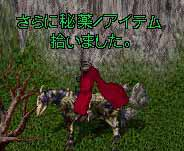
鉱山のまわりを秘薬拾いながら歩いている時、
青い名前を見るだけでうれしくなります。
けいこちゃん、はっけーん。
待ってて！走っていくから！まだ、リコール唱えちゃだめ！！
ダッシュ！ダッシュ！
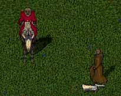
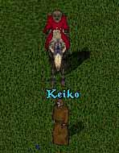
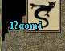
ナオミサーン！待ッテテクダサーイ！
ダッシュシマース！！
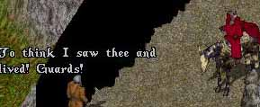
さすがナオミ。国際的。
野良ひーらーのだまし討ちにもめげずに待てば
なんとか殺せるものです。
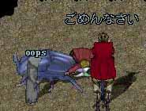
ごめんなさい。
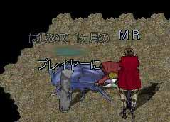
堀師さん「はじめて一ヶ月のプレイヤーに」
田中 「MR（秘薬）」
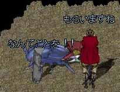
堀師さん「なんてことを！！」
田中 「もらいますね」
初めて一ヶ月でもFに来るほど、資源はおいしいと感じるようです。
みんな来ればいいのに。
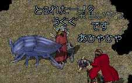
堀師さん「何の秘薬とられたー！？」
田中 「茶色い秘薬です。」
堀師さん「リコールで帰れないじゃないか！」
田中 「2個くらい残してますよ。」
（この方、MR１５０個くらい持っててウハウハでした。）
堀師さん「詠唱失敗して帰れなかったらどうしてくれるんだ！」
田中 「そしたら、歩いて帰ってください。」
すると堀師さんの捨てセリフ。
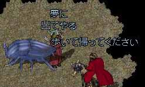
堀師さん「夢に出てやる」
いつの時代の捨てセリフですか。
ついに、反撃を試みたのか
堀師さん「Vas Ort Flam ！」
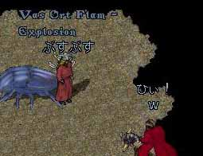
詠唱失敗。
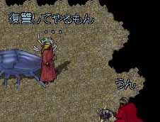
「いつか復讐してやるもん・・・」
ほんとに初めて一ヶ月なのかわからないけど
なんか、すごい人でした。
おもろかったです。
<<おまけ>>
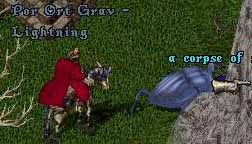
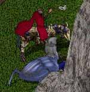
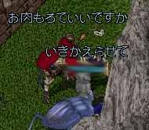
必死同士の主義主張がぶつかり合う
貴重な写真。（追放者の祭風）
面白い精神PKシャドさんの日記が読めるのはこちら！
追放者の祭
おしまい。